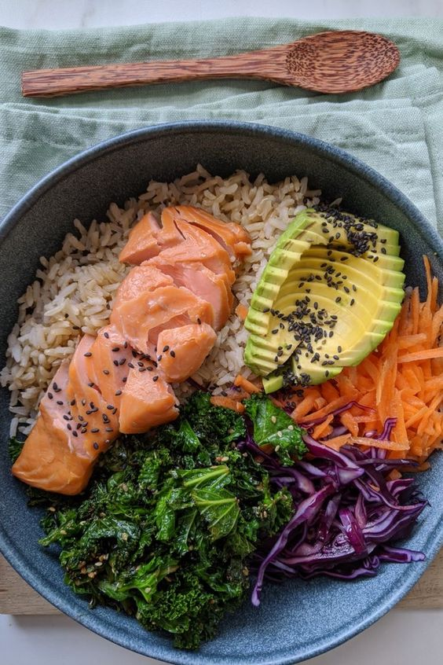

Duración:30 min
Ingredientes: -Salmon
-Arroz blanco (una taza)
-1 Palta
-Media zanahoria
-3 hojas de lechugas
-3 hojas de col
-Sal de maras
-Pimienta
-limon
Preparación:Primero se empezar friendo troso de salmon aderezado en aceite de oliva, sal y pimienta al gusto
Segundo, empezar a cocinar el arroz, el cual la porción es de una taza y agregar un poco de sal y esperar 15 min hasta para q este listo
Proseguimos cortando las verduras elegidas(palta, zanahoria,lechugas,col,etc) en los tamaños q desees para despues hechar sal,limon y pimienta al gusto.
Finalmente al tener todos los alimentos hecho se acomoda en su plato y a comer

Wrap vgano
Duracion:5 min
Ingredientes:-1 Pepinillo
- un paquete de tomates cherry
-Levantarnos temprano: Empieza el día con energía levantándote temprano. Esto te da tiempo para prepararte sin prisas.
-Journaling:El journaling en las mañanas, o escribir un diario matutino, puede tener varios beneficios para ti. Muchas personas encuentran útil comenzar el día escribiendo sobre las cosas por las que están agradecidas. Esto puede cultivar una mentalidad positiva y ayudarte a apreciar las pequeñas cosas.(Claridad Mental, Establecer Metas y Prioridades, Mejora de la Autoconciencia, etc)
-Hidratación: Bebe un vaso de agua al despertar para hidratar tu cuerpo después de una noche de sueño.
-Rutina de cuidado de la piel: Comienza tu día con una rutina de cuidado de la piel que te haga sentir fresco y listo para enfrentar el día.Algunas marcas de productos dermatológicas que te recomiendo son : (CeraVe, Rhode,La Roche Posay , the ordinary, etc)
-Ejercicio matutino: Realiza una breve rutina de ejercicio. Puede ser yoga, pilates, estiramientos o un entrenamiento rápido para activar tu cuerpo y mente.
-Comidas estéticas: Crea un plato visualmente atractivo. Un tazón de frutas, yogur y granola , poke bowl , etc puede ser no solo nutritivo sino también estético.
-Planifica tu día:Dedica unos minutos a planificar tu día. Establece metas realistas y prioridades.